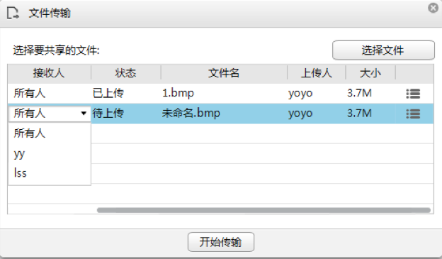

文件传输
您可以上传、下载文件和取消文件传输，上传的文件不能超过25MB。
➢ 上传文件
在会议中主持人可以上传与会议相关的资料。具有权限的与会者可以在文件列表中下载、查看文件。
1. 在工具栏中，单击  ，选择“文件传输”。
，选择“文件传输”。
2. 在“文件传输”窗口，单击“选择文件”。
3. 在本地选择需要上传的文件。
4. 在“接收人”一栏，选择文件的接收人，默认发送给所有人，如图所示。
选择接收人

5. 单击“开始传输”，上传文件。
说明：
- 在“状态”栏会显示文件上传的状态。
- 支持上传非空、未打开且小于等于25MB的文件。
- 不支持上传*.exe 、*.com 、*.dat格式的文件。
➢ 管理上传的文件
在工具栏中，单击 ，选择“文件传输”，系统显示“文件传输”窗口。在“文件传输”窗口，具有权限的与会者可以执行如下操作：
，选择“文件传输”，系统显示“文件传输”窗口。在“文件传输”窗口，具有权限的与会者可以执行如下操作：
- 下载文件
在文件传输窗口，右键单击您希望保存的文件，选择“下载”，将文件保存在本地。
说明：
在保存文件时，如果您没有选择保存路径，则系统将文件保存在默认的路径下。
- 打开文件
在文件传输窗口，右键单击您希望查看的文件，选择“打开”，查看文件内容。
- 删除文件
主持人可以删除所有与会者上传的文件，其他与会者只能删除自己上传的文件。右键单击您希望删除的文件，单击“删除”。